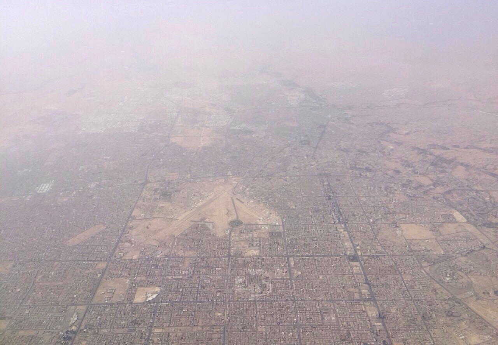

Vol. I · No. 117 · Sunday Special · The week ending September 20, 2026 · ~16 min read
A week that opened with the first Federal Reserve rate rise since 2023 closed with a missile over Riyadh, a merger settlement negotiated against a seven-million-dollar-a-day clock, and a president promising an AI Force.
The Splash · The World · Riyadh · cross-spectrum LLCR
Houthi missiles reach Riyadh for the first time, and an Aramco fuel tank burns at King Khalid airport

King Khalid International Airport, north of Riyadh, where a Reuters photographer recorded smoke rising from the fuel storage area on Saturday. — Wikimedia Commons
Saudi-led coalition spokesman Major-General said Saturday that Houthi forces had fired a ballistic missile at the Saudi capital at dawn, and that air defences intercepted and destroyed it. He said further attempts on Bisha, Taif, Farasan and were thwarted. Houthi military spokesman Brigadier-General Yahya Saree claimed two operations using ballistic and cruise missiles and drones, against what he called sensitive sites in Riyadh and Aramco facilities at Yanbu. A Reuters photographer recorded a column of black smoke rising from the fuel storage area at King Khalid International Airport, and an AFP journalist watched firefighters extinguish a blaze on an Aramco-branded tank. Saudi authorities reported no casualties and no damage. Aramco did not respond to the Associated Press.
It was the first air-raid alert in Riyadh since the Houthi-Saudi escalation opened in July, and the ladder into it took four days. On Wednesday the kingdom said a Houthi drone aimed at Mecca had been intercepted and called it a red line, which the Houthis denied. On Thursday, debris from an intercepted drone killed a Yemeni resident of Saudi Arabia, the campaign's first civilian death. Regional officials told the Associated Press that Saudi Arabia is running low on interceptors and has asked France, Britain, Pakistan and Egypt for air-defence support, and that Washington has signalled it has no current fight with the Houthis. The State Department issued a regional security alert on Saturday. On the United Nations sidelines in New York, Secretary-General Antonio Guterres and Gulf Cooperation Council Secretary-General Jassim al-Budaiwi condemned the targeting of civilian objects.
Gulf exchanges are the only ones that trade on a Sunday, and they priced it first: Saudi and Gulf stocks opened lower, Reuters reported. The strike lands on a kingdom already routing crude around a contested Strait of Hormuz through the East-West pipeline to Yanbu, which is one of the two targets Saree named. Houthi forces hold Mocha, Mayyun and effective control of at the other end of the Red Sea. Two of the four maritime oil chokepoints are contested at once. Of everything disclosed on Saturday, the interceptor shortage is the consequential item, because it is the one constraint that does not improve with another good night of shooting.
"This military conflict has the potential to escalate rapidly."
— U.S. State Department security alert, September 19
Why it mattersSaudi Arabia can defend Riyadh or it can defend its export infrastructure, and the says not both indefinitely. Every energy-linked credit, war-risk premium and Gulf sovereign spread on a desk Monday morning reprices off which one it chooses.
Framing noteRight-tier copy names the actor as an Iran-backed terror group and foregrounds Tehran's direction; wire and left-tier copy says "Houthi rebels" and locates agency in Sanaa. The complication for the first reading is that Iran's own security chief told Al Jazeera the same weekend that Bab al-Mandeb "is a Yemeni matter" and denied Iranian involvement in Yemen's war.
Paramount closes on a settlement with twelve states as a seven-million-dollar-a-day clock starts October 1
Reuters reported Friday evening that Paramount Skydance and the twelve state attorneys general suing to block its $110 billion acquisition of Warner Bros. Discovery are in advanced talks, with independent editorial monitoring of CNN and a binding commitment on annual theatrical releases among the terms under discussion. The New York Times added a possible divestiture of Comedy Central and a period of separate operation for the two film studios. Deadline reported Saturday that the parties could agree before the weekend was out. Warner Bros. Discovery rose more than 8 percent in Friday after-hours trading. The office of California Attorney General did not respond to questions on Saturday.
The clock is the reason. A of $7 million a day begins accruing to Warner shareholders on October 1 under the merger agreement, about $1.06 billion by the time the antitrust trial opens before Judge on March 2 and about $1.3 billion by its close. Paramount has moved to require the states and the Writers Guild to post a as the price of their injunction, with a hearing on September 24; the Justice Department, which cleared the deal in June, filed in support. The opposition spent Saturday trying to hold Bonta in place. Senator Elizabeth Warren called a settlement "a massive mistake." Mark Ruffalo posted "Don't you dare @AGRobBonta, do not cave." , which says it has gathered more than 75,000 signatures in three weeks, argued that "an agreement based on unenforceable concessions is a win only for David Ellison."
Why it mattersA federally cleared deal is being priced rather than litigated. Behavioural remedies fell out of fashion after the government lost AT&T/Time Warner in 2018; a CNN editorial monitor would revive them at the state level, with a court supervising a newsroom.
Trump announces an "AI Force" modelled on the Space Force, with no budget, no placement and no mission
The president posted on on Saturday that he is creating an "AI Force," modelled explicitly on the , the branch Congress established in his first term. He wrote that the government would "not in any way hinder or stifle" the industry's growth and would police bad behaviour through "our already existing Criminal and Civil Justice System." He gave no budget, no placement in the federal government and no mission. He added that he will name an soon, and that only people with a high IQ should apply. The White House did not immediately respond to Axios.
It is his answer to the labs. Dario Amodei, Sam Altman, Elon Musk and Demis Hassabis all called for a slower frontier this month; the president has called the extinction argument a hoax and said the only guardrail artificial intelligence needs is a strong and smart president. The polling runs the other way. A New York Times and Siena survey of 1,503 likely voters found 61 percent opposed to building AI data centres, including 47 percent of Republicans and 75 percent of Democrats. POLITICO and Public First found 63 percent of adults see at least a moderate risk that advanced AI eventually destroys humanity. The czar job is one the White House decided six months ago not to refill, after left it in March.
Why it mattersThe administration's stated position is now that litigation is the only AI guardrail, which makes the courts the regulator by default and every model's terms of service a matter of first impression. That is a hiring plan for the bar and a disclosure problem for anyone underwriting an AI issuer.
The Front · The World · Moscow · cross-spectrum LLC
Ukraine's largest drone attack on Moscow burns the Kapotnya refinery on the final day of Russia's first wartime Duma election
Mayor said Sunday that Ukraine had launched the largest drone attack on the Russian capital to date, citing 450 drones aimed at Moscow; Russian officials put the overnight nationwide total above 1,000. Moscow region governor Andrey Vorobyov reported two dead and 20 injured, three of them children. The Moscow Oil Refinery at , a plant and the only large refinery inside the city limits, caught fire. President Volodymyr Zelensky said he had approved new long-range operations after meeting his commander-in-chief and defence minister. Tymur Tkachenko, who heads the Kyiv region military administration, said overnight Russian strikes killed three children and a woman.
The timing is the argument. Russia's State Duma election ran Friday through Sunday, the first parliamentary vote of the full-scale war, under a system of 225 list seats and 225 districts. United Russia has polled near 40 percent, and all four other parties in the chamber support the war. Initial results were expected around 1800 GMT Sunday. Sobyanin said the attack "was clearly planned with the aim of disrupting the elections." Putin said Friday that Ukraine was deliberately interfering in the vote. Kyiv's framing is narrower and opposite: refineries answer strikes on civilians, and the Kyiv dead are the day's evidence.
Why it mattersThe deep-strike campaign has moved from Russia's refining periphery to the capital's own plant, on a date chosen for maximum political cost. Russian product exports are the transmission channel into diesel cracks that are already carrying the Gulf.
Framing noteThe divergence here is not left against right. American outlets are running near-identical wire copy; the split runs between belligerents, with Moscow calling it an attack on an election and Kyiv calling it an answer to one on civilians.
As three labels license Suno, artists' lawyers find the rights may already have been signed away
Billboard reported Saturday that the music bar is split on the licensing deals Suno has struck with Warner Music Group, BMG and , and that the split is not about whether the deals are good but about whether artists get a say at all. Harold Papineau, a partner at King, Holmes, Paterno and Soriano, said many label and publisher agreements already permit the company to license an artist's recordings for AI training. "It's hard to argue there's somehow some way to stop this from happening." Top-tier artists have the leverage to renegotiate; most do not. said none of her clients will opt in, while crediting BMG for structuring its deal as . Allen Kovac, who manages Motley Crue, was blunter: "As long as you made a deal where we get paid, we'll opt in."
Behind the split is a commercial picture. Suno is valued at $5.4 billion, claims two million paying subscribers, and says 100 million people have generated songs on it. Warner dropped its suit last November in exchange for a licence. BMG's August deal is opt-in on both training inputs and derivative outputs and settles Suno's prior use of BMG recordings and publishing. Universal and Sony did neither, and on Friday filed a second complaint in the District of Massachusetts alleging that Suno's v6 model was trained on the outputs of its own infringing predecessors, which they call the fruit of the same poisoned tree. None of the announced deals specifies how much of the money reaches writers and performers.
Why it mattersThis is the transactional question sitting underneath the copyright headlines, and it is answered in contract rather than in court. The suits will take years. The in a twenty-year-old recording agreement is operative now.
A judge balks at the $100 million piece of TikTok's privacy settlement that TikTok actually wanted
Judge of the Central District of California issued a tentative ruling Friday that he is inclined to reject the part of TikTok's $400 million settlement with the Justice Department that would terminate the 2019 Federal Trade Commission imposed on , TikTok's predecessor. The court "cannot determine that it constitutes a durable remedy or that termination is suitably tailored to the asserted change in circumstance," Wu wrote. Reuters reported the ruling Saturday. A hearing is set for Monday.
The structure is what makes it expensive. Of the $400 million announced in August, $300 million is payable immediately and $100 million is contingent on a court terminating the decree, so a quarter of the settlement now turns on Monday. The underlying action is a 2024 Justice Department suit, referred by the FTC, alleging that TikTok and ByteDance failed to protect children's privacy and unlawfully collected data from users under 13 in violation of the . The decree the deal would dissolve was, when entered, the largest children's-privacy penalty the Commission had ever obtained.
Why it mattersDefendants increasingly buy regulatory closure rather than merely paying for conduct, and this is a court declining to sell it. A contingent payment whose trigger is a judicial finding is a risk-allocation problem drafted by deal lawyers, and it has just come due.
The week's best, department by department, from items that cleared the daily bar
AI
The pacing pact became a lawsuit. Dario Amodei's September 12 essay calling for a slower frontier drew same-day agreement from Sam Altman, Elon Musk and Demis Hassabis, then flat rejection from Jensen Huang and Mark Zuckerberg, then a Sherman Act complaint filed Friday in the Northern District of California by four paying subscribers. Their counsel, Nick Rowley, pleads the same-day endorsements themselves as the agreement, and expressly disclaims any objection to the labs petitioning Congress for a statutory exemption, which is a Noerr-Pennington dodge drafted onto the face of the complaint. Senator Josh Hawley has already said there is "no world" in which he grants one. — Fortune / AP
Anthropic priced the frontier at two trillion dollars. The company anchored a $100 billion raise with $10 billion from Nvidia, chose Nasdaq for a listing that could value it near $2 trillion, and committed at least $1 billion over five years to a joint venture with Accenture embedding evaluators inside client deployments. SoftBank shed a tenth of its value in a day when Altman pushed an OpenAI listing to 2027. Beijing spent the week working the other side: after the Foreign Ministry called Amodei's warnings fearmongering, a CCTV-affiliated account opened a data-sovereignty front, alleging thirteen privacy-policy revisions since 2023 and transfers of Canadian, Brazilian, Korean and EU user data into the United States. — Bloomberg
Mollick names the overhang. In an essay posted Friday night, Ethan Mollick argued the anxiety is pointed at the wrong place: current models are already sufficient for transformative economic effect and almost nobody uses them that way. He names four durable human advantages, deep knowledge, wide knowledge, taste and agency, then demonstrates the gap by having a model reconstruct Umberto Eco's Milan library in three dimensions with no floor plan, working from a dozen videos and two catalogues, reading spines frame by frame and placing roughly 5,000 identified books among 27,000 shelf slots, each marked certain, guess or unknown. — One Useful Thing
Markets & Deals
Warsh hiked, and the curve did not believe him. The Federal Open Market Committee raised its target to 3.75 to 4.00 percent on Wednesday, twelve to nothing, the first increase since 2023. The ten-year closed Friday at 5.004 percent, the two-year at 4.743 and the thirty-year at 5.336, with the two-to-ten spread at its narrowest since March 2025. Bank of America told clients to short the two-year toward 5.25 percent, reading the chair's description of the move as removing "a dose of accommodation" to mean officials do not yet regard policy as restrictive, and therefore will keep going until financial conditions are. — CNBC
The convertible window stayed open at any price. Axon sold $1 billion of zero-coupon converts due 2031 at a 47.5 percent premium with a capped call; CoreWeave upsized to $3.7 billion of 2.875s due 2033; PBF placed $500 million of zero-coupon exchangeables due 2032 to retire its 7.875s; CleanSpark's CSDC Finance I priced $2.276 billion of secured notes at 7.875. Issuers are paying nothing in coupon and a great deal in dilution optionality, which is precisely what a five-handle ten-year does to a capital structure. — The week's pricings
The SEC deregulated in two directions at once. The Commission proposed rescinding Rule 14a-8, the shareholder-proposal rule, in Release 34-106383, and separately issued an innovation exemption clearing the way for tokenised NMS stocks. One narrows who may put a question to a company; the other widens where its shares may trade. Harvard's corporate governance forum, meanwhile, put forced chief-executive departures at 20 in the Russell 3000 through August, 9.9 percent of all successions and a smaller share than either of the two prior years, with health care supplying 35 percent of them. — Harvard Law School Forum
Law & the Courts
A Florida appellate court names the new AI problem, and it is not hallucination. In Lisandrillo v. Palozzi, the Fourth District Court of Appeal wrote that the filings before it contained "gibberish" while taking care to note that "the citations are real. The cases exist." The defect was the absence of reasoning, which the panel called issue churning: a laundry list of convoluted arguments no competent lawyer would make. Judge Robert Gross, joined by Judges Levine and Shepherd, held that whether the work was AI-generated, AI-assisted or something else "makes no difference," and ordered counsel to show cause within ten days, responding "without the use of AI," why sanctions and a Florida Bar referral should not issue. Florida's Rule 2.515(d)(2), effective in June, polices whether citations exist and does not reach this. The Tenth Circuit has proposed a rule that would, with comments open through October 18. — Volokh Conspiracy
Two circuits drew the AI line in opposite directions. The Ninth Circuit held in Doe v. GitHub that an AI output is not a copy for purposes of section 1202's copyright-management-information provisions, narrowing one of the most-pleaded counts in model litigation. The same court deepened a circuit split in Blue Lake Rancheria v. Kalshi over whether prediction markets on tribal land are class III gaming under IGRA, a question that now needs the Supreme Court. — the week's opinions
The lateral market has stopped asking for a book of business. Firms are hiring data-centre partners out of smaller shops and telling them not to worry about bringing clients, inverting the rule that has governed partner valuation for a generation. Pirical counts lateral hires with data-centre experience up 65 percent last year and 168 percent since 2020, with sign-on bonuses well into six figures. Elsewhere the week ran the usual way: Weil lost both corporate co-chairs and its London co-managing partner, Gibson Dunn took Kimberly Branscome from Paul Weiss, and Michael Best combined with Kane Kessler for its first New York office. — The American Lawyer
The World
Two chokepoints at once. Hormuz war-risk cover ran at 3 to 10 percent of hull value against fourteen transits over a weekend; Saudi loadings fell 70 percent with vessels going dark off Sohar; the East-West pipeline shut and Brent held near $107 before easing to about $103 by Friday's settle. Houthi forces hold Mocha, Mayyun and effective control of Bab al-Mandeb at the other end of the Red Sea. Iran's new security council secretary, Mohsen Rezaei, told Al Jazeera on Saturday that Tehran has sent Washington three conditions through Qatar and Pakistan: end the war, release the frozen funds, lift the naval blockade. A former Pentagon official called the terms surrender, while noting Iran had dropped its earlier demand for reparations. — Al Jazeera
Washington tightened one screw and quietly loosened another. The president signed the Graham Sanctioning Russia and Iran Act with 100 percent tariff authority under IEEPA; OFAC designated VTB under Iran authorities; and Russia and China vetoed renewal of the UN panel of experts on Iran, whose mandate dies September 27. In the other direction, the 2021 Tigray national emergency was allowed to lapse this week rather than be renewed, clearing sanctions on Eritrea's ruling party, its defence forces and the Red Sea Trading Corporation. The State Department said the decision was made "to advance US regional interests." Eritrea sits on the African shore of the same corridor the Houthis now command. — Washington Post
Central banks diverged inside one week. The Bank of Japan hiked to 1.25 percent, a 31-year high, seven to two. The Bank of England held six to three and took quantitative tightening to zero through 2034, with August CPI at 3.1 percent. The Federal Reserve went the other way on Wednesday. Three of the four largest central banks moved in three directions in five days, which is the whole macro story of the autumn in one sentence. — the week's decisions
Culture & EASL
Resident Evil posts the franchise's best opening in twenty-four years. Zach Cregger's adaptation took $26.3 million on Friday including $8.8 million in previews at 3,684 theatres, with Sony calling the weekend at $53 to $55 million and rivals nearer $60 million, against a net $75 million production. Friday alone beat the entire domestic run of Welcome to Raccoon City. It carries a B-plus CinemaScore, the series' best ever, and 96 percent on Rotten Tomatoes against the 2002 original's 67 percent audience score. Premium large format and IMAX supplied 53 percent of grosses. — Deadline
Disney hired the chief executive of the company it sent a cease-and-desist. Karandeep Anand becomes Disney's first chief technology officer on October 2, reporting to Josh D'Amaro, with a number of Character.AI's technical staff expected to follow him across. In September 2025 Disney sent Character.AI a cease-and-desist over unauthorised use of Elsa, Moana, Peter Parker and Darth Vader, and the characters came down. A cease-and-desist has no independent legal force; its value is that it establishes notice, which converts later infringement into wilful infringement. It has now also established a hiring pipeline. — Deadline
College sports moved a step closer to a federal statute. The Senate voted 77 to 22 on Thursday to advance the Protect College Sports Act, and the revised text released Friday cuts the waiting period for a school moving between Power Four conferences from five years to three, sunsetting the restriction entirely six years after enactment. The bill would preempt more than thirty state NIL statutes. The House is the obstacle, and reporting is increasingly doubtful it reaches the floor before November. Separately, Tokyo Game Show cancelled the fifth day of its first five-day edition as Typhoon Dujuan closed on Kanto, refunding Monday tickets across a show with 759 exhibitors. — CBS Sports
Wall Street South
Sponsors. H.I.G. Capital had the week. An affiliate agreed to take MISTRAS Group private at $866 million with a go-shop period and Kirkland on the deal, the largest signed transaction by enterprise value inside any window this week. Two days earlier H.I.G. sold General Datatech to Britain's Softcat at a $1.05 billion enterprise value, with Kirkland on both sides. — the week's filings
Capital. Orion180 priced its IPO at $12, below a $15 to $17 range, with founder Kenneth Gregg the sole holder of the Class B shares. Houlihan Lokey opened a West Palm Beach office, its second in South Florida, citing private equity and family-office clients; chief executive Scott Adelson called the city "a major nexus for finance and investment." Lennar cut full-year deliveries to 80,000 to 81,000 in the third quarter, with Stuart Miller saying conditions had deteriorated and mortgage rates near 6.8 percent. — South Florida Business Journal
Law. Akerman named Charles Zerner its first director of AI development. Joe diGenova signed the Brennan subpoena on September 9 and resigned the following day, leaving the Fort Pierce case before Judge Cannon without the lawyer who issued its process. In Miami, Judge Williams asked what role Quinones played in the Smartmatic FCPA prosecution, against a vindictive-prosecution claim. And the Fourth District's AI-slop opinion, above, came out of West Palm Beach. — Above the Law
Sport. Miami left adidas for Nike on a ten-year, roughly $200 million agreement beginning July 2027, with a Blue Ribbon and Elite NIL component surfacing later in the week. The jersey patch remains unsigned, measured against Notre Dame's $18 million SoFi deal, with a roster valued at $44 to $50 million and ranked sixth in the country. — Sportico
The week in review
Seven days, in the order they happened
Mon Sept 14
The ten-year crossed 5.012 percent into the Federal Reserve meeting with hike odds near 84 percent and the semiconductor index down 6 percent. Morgan & Morgan said it had replaced $1 billion of hourly BigLaw work with legal engineering, and the Supreme Court denied 26A305 seven to two over an Alito dissent.
Tue Sept 15
Judge Cooper blocked the renaming of the Kennedy Center and its board closed the building for two years at a cost of $257 million. Jensen Huang and Mark Zuckerberg rejected the pacing pact outright. Universal and Capitol sued DistroKid in Delaware over 1,000 tracks.
Wed Sept 16
Kevin Warsh delivered the first rate increase since 2023, twelve to nothing, with the statement rewritten. The Ninth Circuit held in Doe v. GitHub that an AI output is not a copy under section 1202. Ursula von der Leyen offered Canada associate membership and the White House called it a hostile act.
Thu Sept 17
OpenAI launched Astra for Law on a 230-million-URL index reaching CourtListener, aimed squarely at the Am Law 200. The ten-year TIPS reopening tailed 1.9 basis points at 2.653 percent, the highest real yield since 2008. The president signed the Graham Act.
Fri Sept 18
Trump told Axios he had made an "annihilate" decision after a tanker strike in Hormuz. Four subscribers filed a Sherman Act complaint against Anthropic, OpenAI, Google and xAI over the pacing pact. Universal and Sony filed a second Suno complaint in Massachusetts, and Paramount's talks with twelve state attorneys general were reported as advanced.
Sat Sept 19
Houthi missiles reached Riyadh for the first time and an Aramco fuel tank burned at King Khalid airport. Trump announced an AI Force and a coming czar. The opposition to the Paramount settlement went public, with Warren and Ruffalo pressing Bonta not to sign.
Sun Sept 20
Ukraine launched its largest drone attack on Moscow, burning the Kapotnya refinery on the final day of Russia's first wartime Duma election. Gulf exchanges, the only ones open, fell at the bell.
Compiled by Matthew Yellin · mattyellin.com · Est. May 2026 · The Sunday edition gathers the week across every sector; the weekday paper returns Monday